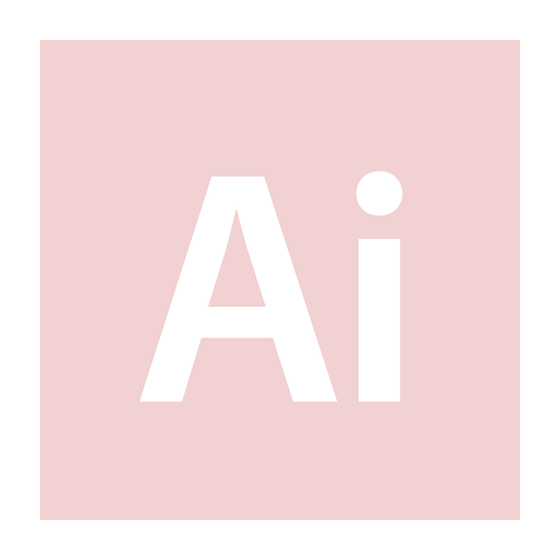
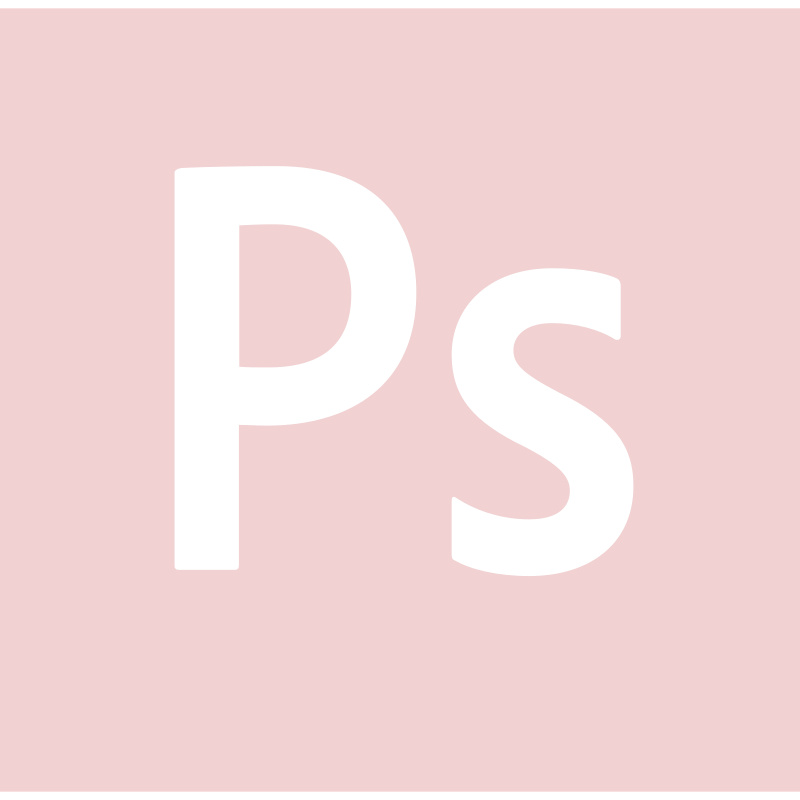
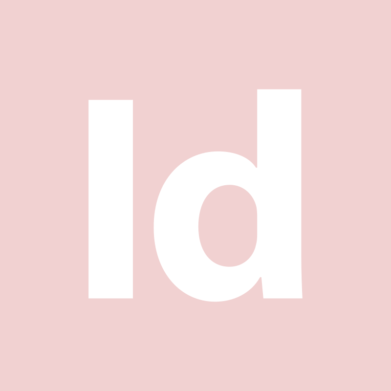
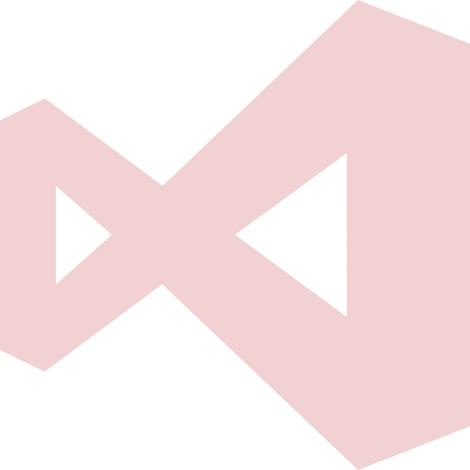
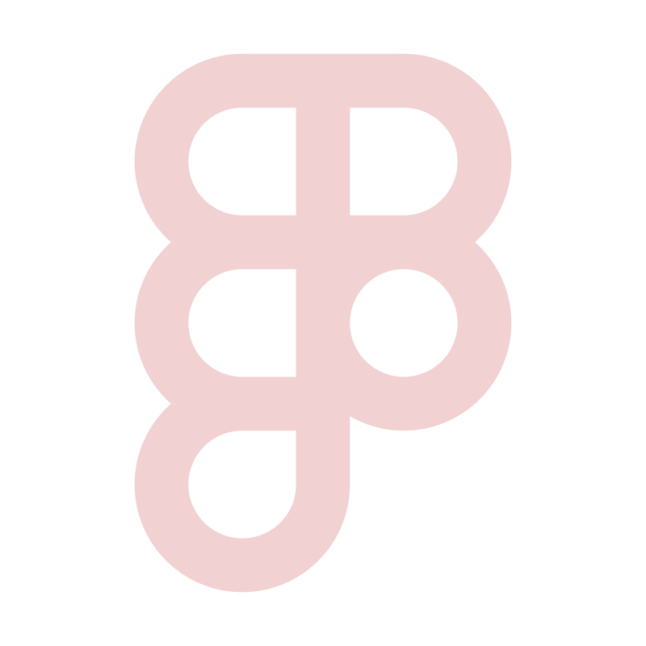

Radiant est une marque fictive proposant des bougies artisanales, Radiant est une invitation à la détente et à l'élégance, transformant les moments ordinaires en expériences sensorielles uniques.
Bienvenue sur mon
Portfolio
Titulaire d'un diplôme de concepteur design UI, je combine créativité et compétence
technique pour
développer des interfaces web intuitives.
Merci de prendre le temps de parcourir mon portfolio. J’espère
que cette plongée dans mon univers de graphiste et UI/UX designer
vous offrira un aperçu convaincant de ma
passion et de mon savoir-faire.
2023
Web Designer & Graphiste (STAGE)
MK Galerie & Magnificence
Création d'un site web
Création de logo
Création d'un journal éditorial
2022
Secrétaire en bibliothèque (STAGE)
Accueil clients
Préparation d’une conférence





Formation
OnlineFormaPro 2023
Titre Professionnel Concepteur Designer UI BAC+3
Mes réalisations
SPATH est une entreprise fictive spécialisée dans la mise en œuvre de l'exploration spatiale. Le logo intègre des éléments comme des vaisseaux spatiaux ou encore des planètes. Ce vêtement a été conçu pour promouvoir SPATH.
La Renardière est une brasserie artisanale qui se distingue par son approche unique de la bière. Le logo, créé en formation pour un particulier, incarne l'esprit vif et l'élégance de la marque.
Magnificence incarne l'essence d'une marque qui se distingue par son raffinement et son élégance intemporelle. Conçu avec soin lors d'un stage, ce symbole visuel fusionne minimalisme et sophistication.
Sunrise Coffee est une marque fictive qui offre une expérience café unique, en harmonie avec la nature. Le logo, évoquant les premières lueurs de l'aube.
Jewelique incarne l'élégance et l'innovation dans l'univers de la joaillerie. Conçu pour capturer l'essence de la sophistication moderne, ce symbole distinctif représente à la fois la tradition et la tendance.